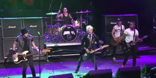

SUM 41(читается «сам фоти-уан») — канадская панк-рок-группа
из города Эйджакс, Онтарио. Была образована в 1996 году, текущий состав
группы: Дерик Уибли (вокал, ритм-гитара, клавишные), Джейсон МакКэслин
 (бас-гитара, бэк-вокал), Том Такер (соло-гитара, клавишные, бэк-вокал), Дэйв
Бэкш (соло-гитара, бэк-вокал) и Фрэнк Зуммо (барабаны, бэк-вокал). В апреле
2013 года из группы ушёл барабанщик Стив Джоз, Фрэнк Зуммо присоединился к
группе летом 2015 года.
С момента подписания контракта с лейблом Island Records в 1999 году группа
(бас-гитара, бэк-вокал), Том Такер (соло-гитара, клавишные, бэк-вокал), Дэйв
Бэкш (соло-гитара, бэк-вокал) и Фрэнк Зуммо (барабаны, бэк-вокал). В апреле
2013 года из группы ушёл барабанщик Стив Джоз, Фрэнк Зуммо присоединился к
группе летом 2015 года.
С момента подписания контракта с лейблом Island Records в 1999 году группа
выпустила пять студийных альбомов, три концертных альбома, два концертных
DVD и более 15 синглов.
Суммарные продажи альбомов составили более 30 миллионов
копий. На сегодняшний день самым успешным альбомом группы является All
Killer No Filler,
который стал трижды платиновым в Канаде и платиновым в
Соединённых Штатах. Один из синглов этого альбома,

«Fat Lip», возглавлял
рейтинг Billboard Modern Rock chart. В этом же чарте сингл «In Too Deep»
достиг 10-й позиции.
Sum 41 известны своими продолжительными турне, которые нередко длятся более
года и включают более 300 концертов. Группа шесть раз была номинирована
на главную канадскую премию Juno Awards и побеждала в номинациях «Группа года»
в 2003 году и «Рок альбом года» в 2005 году (за альбом Chuck). Песня «Blood
In My Eyes» с альбома Screaming Bloody Murder была номинирована на премию
Грэмми в категории «Лучшее исполнение хард-рок/метал-композиции».
Первоначально Sum 41 были кавер-группой NOFX и назывались Kaspir,
но изменили название на Sum 41 для шоу Supernova («Сверхновая звезда»)
28 сентября 1996 года. Члены Sum 41 начинали играть в соперничавших
группах ещё в средней школе. Дерик Уибли и Стив Джоз за пять лет переиграли
во многих группах.
Самая первая видеозапись живого выступления группы датируется 1998 годом,
на шоу Jonopalooza. Из классического состава в группе были только Стив Джоз
и Дерик Уибли который играл на гитаре. На вокале был Джон Маршал, который
так же играл на гитаре, а иногда и на бас-гитаре. Тогда группа играла
песни написанные Джоном. Джон Маршал покинул группу спустя год и начал
сольную карьеру под псевдонимом DJ Big Tuna. Нынешний басист «Коун»
присоединился к группе в 1999 году, сменив Марка Спиколака, который
впоследствии ушёл играть на бас-гитаре к Аврил Лавин. Самым первым бас-гитаристом
в группе был Ричард «Судорога» Рой, он играл в группе в 1996—1998 годах. Его
можно увидеть в видео «Bring The Noize!», а единственной записью, на которой
можно услышать его игру, стала демо-кассета Rock Out With Your Cock Out (1998).
«Коун» любит рассказывать, что группа выбрала себе название лишь после того,
как он к ним присоединился.
В 1998 году участники группы отослали самодельный видеоклип и демозаписи
звукозаписывающим компаниям, и ими заинтересовалась Island Records. Компания
согласилась подписать группу в 2000 году на волне успеха таких известных
панк-групп, как Green Day, Blink-182 и Offspring. 27 июня 2000 года музыканты
выпустили мини-альбом Half Hour of Power. Первым синглом группы стала песня
«Makes No Difference», на которую было снято два видеоклипа. Первый клип состоял
из видеороликов, которые снимала сама группа, а во второй версии группа пела
на домашней вечеринке. Альбом стал платиновым в Канаде. Сразу после релиза группа
отправилась в тур, в котором выступала на одной сцене с The Mighty Mighty
Bosstones, The Offspring и Blink-182.
Sum 41 выпустили первый альбом All Killer No Filler 8 мая 2001 года. Первым
синглом с этого диска была композиция «Fat Lip», которая стала крупным хитом
лета и достигла первых строчек в хит-парадах США и других стран. Компания
Nokia даже объявила, что «Fat Lip» — самая используемая мелодия для мобильного
телефона[24]. Этот сингл также входил в трек-лист игры NHL 2002 компании
EA Sports вместе с «Makes No Difference». Популярность группы значительно
возросла благодаря выступлениям на Warped Tour в этом году. Позже были выпущены
2 других сингла: «In Too Deep» (в комедийном клипе на эту песню группа
участвовала в прыжках в воду с трамплина) и «Motivation» (в клипе группа пела
песню в мансарде). Далее вышел клип на песню «Handle This», в котором
демонстрировались видео из повседневной жизни группы и записи с концертов.
Больше года Sum 41 провели на гастролях, отыграв за 2001 год 300 концертов,
включая выступления на разогреве у Blink-182. Последняя неделя тура была
отменена музыкантами в связи с событиями 11 сентября[27]. Песни «Fat Lip»
и «In Too Deep» вошли в саундтрек к фильму Американский пирог 2.
В 2002 году на MTV Movie Awards группа спела кавер Aerosmith «Walk This Way» вместе с Ja Rule
и Nelly.
Позже вышел клип «What We're All About», это изменённая версия песни
«Dave’s Possessed Hair/It’s What We’re All About» из мини-альбома «Half Hour of
Power», в изменённой версии на гитаре играет соло, а в клипе появляется Керри
Кинг из Slayer. Песня вошла в саундтрек к фильму Человек-паук и звучала в
финальных титрах фильма.
26 ноября 2002 года Sum 41 выпустили второй альбом под названием Does This
Look Infected?. В новом альбоме Sum 41 изменили свой стиль, их музыка стала
немного тяжелее. «Мы не хотим играть музыку, которая всё равно будет звучать,
как наш предыдущий альбом, — говорил вокалист группы Дерик Уибли. — Я ненавижу,
когда группы повторяют свои песни». Первым синглом стала песня «Still Waiting»,
которая попала в хоррор-игру ObsCure. Следом за ней группа выпустила сингл
«The Hell Song», в клипе которой показывали игрушечные фигурки знаменитостей:
Оззи Осборна, Памелы Андерсон и группы Kiss. Следующим синглом стала песня
«Over My Head (Better Off Dead)»; видео на неё вышло исключительно в Канаде
и на веб-сайте группы. Клипы «Still Waiting» и «Over My Head (Better Off Dead)»
попали на DVD Sum 41 «Sake Bombs and Happy Endings» (2003). Песня «A.N.I.C.»
(Anne Nicole Is a Cunt) посвящена скандально известной модели Анне Николь Смит,
на концертах Дерик называет песню «особой песней о любви» (special love song),
на самом же деле в ней содержится серия оскорблений.
В начале 2004 года группа написала песню о Джордже Буше, которая называлась «Moron»
(идиот) и вышла в виде бонусного трека на альбоме Chuck только в Японии.
Также она вошла в политический панк-сборник, Rock Against Bush, Vol. 1, который
вышел 20 апреля 2004 года.
В конце мая 2004 года группа поехала в Демократическую Республику Конго вместе
с организацией War Child Canada, чтобы снять документальный фильм о гражданской
войне в стране[29]. Когда группа приехала в Букаву, прямо перед отелем, где они
остановились, началась перестрелка[29]. Музыканты ждали в отеле окончания
перестрелки, но она не утихала. Тогда представитель ООН Чарльз «Чак» Пеллетье,
также канадец, приказал, чтобы подъехал бронированный транспорт и забрал жителей
гостиницы из горячей зоны. Транспорт прибыл почти шесть часов спустя,
и музыканты вместе с сорока другими гражданскими лицами были перевезены в
безопасное место. Sum 41 назвали свой следующий альбом Chuck в честь Пеллетье,
благодаря которому они остались в живых. Документальный фильм всё же был сделан
и назван «ROCKED: Sum 41 in Congo», он позже транслировался MTV. War Child
издали фильм на DVD 29 ноября 2005 года в Соединённых Штатах и Канаде.
Sum 41 выпустили альбом Chuck 12 октября 2004 года. Это был тяжёлый альбом,
который уже имел намного более серьёзный тон, в нём, в отличие от предыдущих
альбомов, совсем не было юмора. Первым синглом альбома стала песня «We're All
to Blame». Переключение песни от быстрого темпа к медленному передавало поездку
группы в Конго: только что всё было мирно и спокойно, а уже в следующее
мгновение со всех сторон раздаются выстрелы. Затем вышел клип на песню «Pieces»,
это была спокойная песня, и она долгое время возглавляла хит-парады в Канаде.
Потом вышел клип на песню «Some Say», он был показан только в Канаде и Японии.
Последним синглом этого альбома стала песня «No Reason», но клипа на неё
снято не было; в Европе и США песня дошла только до 16-го места в хит-парадах.
Sum 41 выпустили концертный компакт-диск «Happy Live Surprise» в Японии 21
декабря 2005 года. Компакт-диск был спродюсирован Дериком и содержал полную
запись концерта группы в Лондоне, Онтарио. Тот же самый компакт-диск был
выпущен 7 марта 2006 года в Канаде под названием Go Chuck Yourself.
После тура Go Chuck Yourself в поддержку альбома Chuck Sum 41 провели тур
вместе с Good Charlotte
11 мая 2006 года Дэйв Бэкш объявил о своём уходе из группы Sum 41, чтобы
начать работу над новой группой Brown Brigade.
Бэкш ушёл из-за того, что ему надоело играть панк, он хотел играть настоящий,
классический метал[31]. В своей группе Brown Brigade он стал ведущим солистом
и гитаристом. Вскоре он основал новую группу — Organ Thieves.
12 мая Дерик подтвердил уход Дэйва и сказал, что группа не будет искать четвёртого
участника, а концертный гитарист, который заменит Дейва на время гастролей, не
будет фигурировать в клипах, на альбомах и официальных фотосессиях.
17 апреля 2007 года группа выпустила на iTunes первую песню из нового альбома,
которая называлась «March of the Dogs» и снова содержала критику президента
Джорджа Буша[33], Дерик описывал её как «…метафору того, каким неэффективным
и некомпетентным президентом является Джордж Буш. Он не достоин быть лидером».
Запись четвёртого студийного альбома группы, Underclass Hero, началась 8 ноября
2006 года и завершилась 14 марта 2007 года. Альбом «Underclass Hero» был выпущен
24 июля 2007 года. Он стартовал на седьмой позиции в Соединённых Штатах.
Вместе с альбомом вышел и клип на песню «Underclass Hero». Действие происходит
ночью на побережье Лос-Анджелеса. В нём группа поёт на сцене, а рядом
развлекаются 200 человек, среди которых был мужчина, переодетый в букву А
(анархия). Припев в «Underclass Hero» точно такой же, как и в «Subject to Change»
из альбома Chuck. Альбом был выдвинут на Juno Award в номинации «Рок-альбом года»
(«Rock Album of the Year»), но награду получили Finger Eleven за альбом Them
vs. You vs. Me. На MTV2 20 августа первый раз был показан клип на песню
«Walking Disaster», песня, по словам Дерика, рассказывает о его детских годах,
о периоде жизни, о котором не осталось хороших воспоминаний. 24 июля группа
исполнила песню на «Tonight Show» у Джея Лено на канале NBC. Песня «Underclass
Hero» вошла в игру Madden NFL 08. 28 февраля 2008 года на MySpace появился
клип на песню «With Me». Sum 41 исполнили её на «Jimmy Kimmel Show» на канале ABC.
7 августа 2008 года Коун объявил, что все участники группы возьмут небольшой отпуск
перед началом работы над следующим альбомом. Коун начал работать над вторым
альбомом его группы The Operation M.D.. Стив до конца лета играл в качестве
концертного барабанщика у The Vandals. А Дерик отправился в турне по Азии с
женой Аврил Лавин. На концертах они вместе исполняли песню группы Sum 41
«In Too Deep». На YouTube можно найти много фанатских записей этой песни с
концертов, а позже вышло и официальное видео, где они вместе исполняли эту песню.
26 ноября 2008 года в Японии вышел сборник хитов 8 Years of Blood, Sake, and Tears:
The Best of Sum 41 2000-2008. Альбом включает почти все синглы группы, новую
песню «Always» и DVD с почти полной коллекцией клипов. В феврале 2009 года группа
заявила, что из-за успеха сборника к концу марта в Европе и Канаде планируется
выпуск немного изменённый варианта этого диска под названием All the Good Shit.
На диске будет отсутствовать живая запись песни «The Hell Song», записанная
в Orange Lounge в Торонто. Все остальное останется неизменённым. 5 июня 2009
года Sum 41 вместе с Кэти Перри выступили в качестве приглашённых звезд на VII
Церемонии награждения Муз-ТВ.
Universal Music объявили, что на волне успеха диска Underclass Hero группа
должна выпустить новый EP в 2009 году. Недавно Дерик заявил, что новый EP по
мере работы над ним превращается в долгожданный новый альбом, работа над которым
ведется с конца 2008 года. Также в 2009 году группа совершит турне в поддержку
альбома. 15 февраля 2009 uj Дерик заявил на официальном сайте, что вместо
EP выйдет полный новый студийный альбом. 28 июня 2009 года «Коун» написал
на официальном сайте группы, что новый альбом будет выпущен в 2010 году.
20 июля Стиво рассказал в блоге группы о том, что как только они завершат тур
с The Offspring, оставшееся время до конца года они собираются заняться своим
новым альбомом, в записи которого примет участие новый ведущий гитарист Том
Такер. 31 июля 2009 года, в интервью Стив и Коун сказали, что новый альбом
будет выпущен приблизительно летом 2010 года, хотя возможно и раньше.
17 марта 2010 года группа закончила запись всех музыкальных инструментов для
нового альбома в домашней студии Дерика Уибли. Новый студийный альбом получил
название Screaming Bloody Murder и вышел 25 марта 2011 года в Австралии,
28 марта — в Европе, 29 марта — в США и Канаде. 6 июля 2010 года группа
выложила в интернет первую песню с альбома, она называется «Scumfuck». 8
января 2011 года было объявлено о запланированном на 7 февраля запуске
радиосингла «Screaming Bloody Murder».
Как говорит сам Дерик Уибли новый альбом стал более тёмный, но в чём причина этого
объяснить затрудняется: «Это очень трудно объяснить, они (песни) могут быть
о чём угодно, потому что я даже не знаю, о чём они.» — говорит Дерик в одном
из интервью. Сначала новый альбом Sum 41 продюсировал Джил Нортон, но после
того как между ним и группой возникли разногласия по поводу видения нового
альбома, Дерик сам стал продюсером.
18 апреля 2013 года Стив Джоз на официальной странице Facebook заявил,
что покидает группу.
После ухода Стива от группы поступало очень мало новостей.
В интервью от 7 февраля 2014 года Дерик рассказал, что, возможно, группа
нашла нового барабанщика и скоро может появиться новый материал.
В мае 2014 года на официальном сайте Дерика Уибли появилась запись,
в которой он рассказал о том, как фактически пережил клиническую смерть от
острой почечной и печёночной недостаточности, к которой привели годы
каждодневного и бесконтрольного злоупотребления алкоголем. От смерти Дерика
спасла его девушка, которая отвезла его в госпиталь, когда тот потерял сознание,
находясь в собственном доме. Пролежав месяц в госпитале в палате интенсивной
терапии, Дерик начал процесс восстановления, пообещав себе и фанатам,
что завязал с алкоголем и скоро вернётся на сцену.
1 апреля 2015 Sum 41 официально объявили о возвращении на сцену в рамках
фестиваля Alternative Press Music Awards который пройдет 22 июля 2015 в
Кливленде. 3 июля 2015 года Дерик сыграл свои первые за два с половиной
года концерты совместно со своими друзьями в рамках коллектива The Happiness
Machines.
19 апреля 2016 года Дерик опубликовал на своей странице в Facebook запись о том,
что завершает новый альбом группы. Выход альбома намечен на 7 октября 2016 года.
29 июня 2016 года Sum 41 выпустили первый сингл с нового, шестого студийного
альбома «13 Voices» под названием «Fake My Own Death». Одновременно с песней
вышел и новый клип, действие которого происходит в Нью-Йорке, а участники группы
в нём скрываются от героев популярных интернет-мемов. Эта песня стала первым
релизом за последние пять лет, а также первой песней, выпущенной после ухода из
группы барабанщика Стива Джоза и возвращения в группу гитариста Дэйва Бэкша.
25 августа 2016 года в сервисах цифровой музыкальной дистрибуции появилась песня «War».
Одновременно с этим на Youtube-канале Hopeless Records вышел одноимённый клип.
По словам Дерика, эта песня очень личная и много значит для него самого.
В тот момент, когда он вышел из комы и у него было два пути: либо вернуться к
старой жизни с алкоголем, который непременно его бы убил, либо начать
восстановление. Тогда он взял в руки вместо бутылки карандаш и бумагу и начал
писать то, что было в его голове. Эта песня была для него самого напоминанием
того, что нужно бороться.
28 сентября 2016 года группа выкладывает в открытый доступ очередную песню
с нового альбома «God Save Us All (Death to POP)»